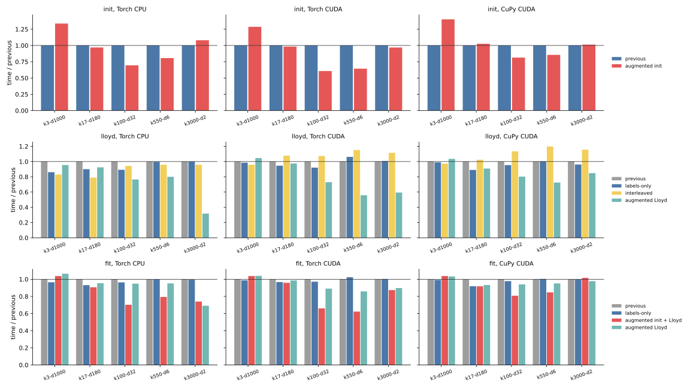
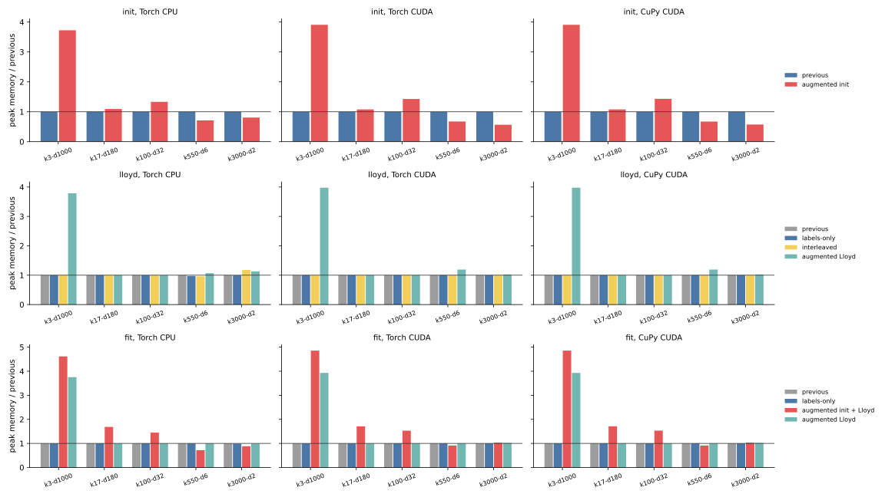
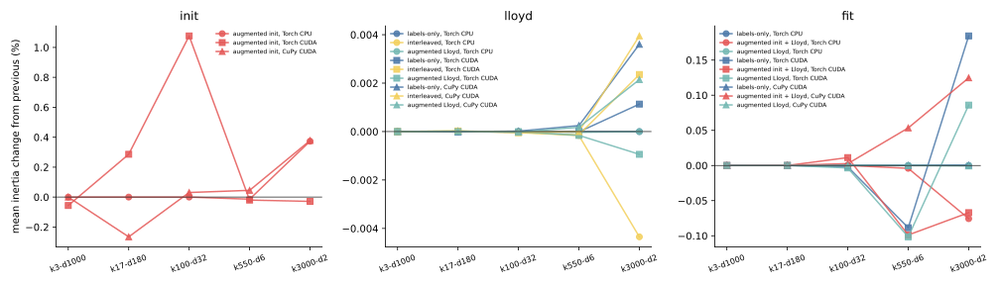

019 — Optimization impact on CPU and GPU, measured beside cakedev0
018 measured backend-neutral optimizations only on a local CPU and could only project the remaining gap to cakedev0's Cython implementation. Here the benchmark host is back. Every method runs on Torch CPU, Torch CUDA, and CuPy CUDA across all five tasks. Cakedev0's scikit-learn build runs on the same machine.
The measured code is commit 45199eb:
assign_homogeneous_tiledevaluates-2 X Cᵀ + ||C||²as one GEMM of[X, 1]and[-2C, ||C||²], and gives zero coefficients to extra trailing columns;_tileskeeps the estimator's device tile schedule on GPU for every method;_warm_gpuruns the selected method on a small slice before timing;workermeasures one fresh-process row.
results.json contains the 450 final rows, the 75 first-run rows replaced by reruns, and 45 cakedev0 rows. tables.md has every mean, standard deviation, ratio, memory peak, and inertia change.
Setup
- One host: four CPU threads, 15 GiB RAM, and an NVIDIA L4. Float32, TF32 disabled, three seeds, 12 Lloyd iterations, and
tol=1e-8. - The five tasks from 011–017:
k3-d1000,k17-d180,k100-d32,k550-d6, andk3000-d2. initis greedy k-means++.lloydstarts from shared random rows and ends with a final assignment and inertia pass.fitis k-means++ followed by Lloyd. Array-API rows call these functions directly rather than the estimator.- The methods compared are:
- previous: the implementation before 018;
- labels-only: skips the winning-score gather when every center fits in one center tile;
- interleaved: assigns and accumulates one sample tile at a time;
- augmented Lloyd: uses augmented GEMM only during Lloyd;
- augmented init + Lloyd: also uses the augmented GEMM in k-means++ and reuses that matrix in Lloyd.
- CPU rows use 018's CPU tiles. GPU rows use the estimator's GPU tiles for every method, so only the formulation or loop shape changes.
- Cakedev0 uses
kmeans_plusplusfor initialization andKMeans(n_init=1, algorithm="lloyd")for Lloyd and full fit. Its Lloyd and fit rows therefore include estimator validation that the array-API rows do not. - CPU memory is the
VmHWMincrement after loading the input. GPU memory is the allocator peak above the pre-call baseline. - Host memory stayed above 6 GiB available, about 40% headroom, during the widest augmented runs.
Iteration notes
The first full run had 10 cells with one 2–3× slower seed, the same transient host noise seen in 015. All three seeds of those cells were rerun, and eight became stable. Two remain noisy after rerun: Torch CPU previous Lloyd at k3-d1000 (16.5 ± 2.7 s) and augmented Lloyd at k3000-d2 (6.6 ± 0.7 s).
The first run also exposed a CuPy-only regression: augmented init plus Lloyd was 1.82× slower than previous at k3-d1000. K-means++ stores [X, 1, ||x||²], and Lloyd originally column-sliced that to [X, 1]. That slice is a non-contiguous view. Timing one 950,000 by 1001 assignment pass with three centers shows the effect:
| backend | strided [X, 1] view |
full width, zero coefficient |
|---|---|---|
| CuPy CUDA | 68.1 ms | 17.3 ms |
| Torch CUDA | 17.3 ms | 17.2 ms |
CuPy copies the strided operand before every matrix product; PyTorch passes the stride to cuBLAS. assign_homogeneous_tiled now pads the center coefficients with zeros instead of slicing samples. That changes CuPy full fit from 1.672 to 0.953 s at k3-d1000 and from 0.978 to 0.728 s at k17-d180. The tables use the rerun after this fix.
Time

Speedups over the previous implementation (greater than 1 is faster):
| phase and method | backend | k3-d1000 | k17-d180 | k100-d32 | k550-d6 | k3000-d2 |
|---|---|---|---|---|---|---|
| init, augmented | Torch CPU | 0.75x | 1.03x | 1.44x | 1.24x | 0.93x |
| init, augmented | Torch CUDA | 0.78x | 1.02x | 1.65x | 1.55x | 1.03x |
| init, augmented | CuPy CUDA | 0.71x | 0.97x | 1.23x | 1.17x | 0.99x |
| Lloyd, labels-only | Torch CPU | 1.16x | 1.11x | 1.12x | 1.00x | 1.00x |
| Lloyd, interleaved | Torch CPU | 1.20x | 1.27x | 1.06x | 1.04x | 1.04x |
| Lloyd, augmented | Torch CPU | 1.05x | 1.08x | 1.31x | 1.25x | 3.15x |
| Lloyd, augmented | Torch CUDA | 0.96x | 1.03x | 1.37x | 1.79x | 1.68x |
| Lloyd, augmented | CuPy CUDA | 0.97x | 1.10x | 1.25x | 1.38x | 1.18x |
| fit, augmented init + Lloyd | Torch CPU | 0.96x | 1.10x | 1.42x | 1.26x | 1.35x |
| fit, augmented Lloyd | Torch CPU | 0.94x | 1.05x | 1.05x | 1.05x | 1.45x |
| fit, augmented init + Lloyd | Torch CUDA | 0.96x | 1.04x | 1.52x | 1.61x | 1.14x |
| fit, augmented init + Lloyd | CuPy CUDA | 0.96x | 1.09x | 1.24x | 1.18x | 0.98x |
The augmented GEMM is the only change with large gains on every backend, and those gains concentrate where the score tile dominates:
- Lloyd gains appear when the number of centers is at least the number of features: 1.25–3.15× on CPU, 1.37–1.79× on Torch CUDA, and 1.18–1.38× on CuPy. Removing the per-tile norm addition and scaling matters most when the
(tile_n, k)score tile is much larger than the(tile_n, d)input tile. Atk3-d1000andk17-d180, Lloyd changes by only 0.96–1.10×. - Initialization loses 22–29% at
k3-d1000: building the 3.8 GB augmented copy costs more than three cheap candidate scores save. Atk3000-d2, the extra two columns double the GEMM width while each k-means++ round scores only 10 candidates, so the result is neutral or worse. - Full fit follows the dominant phase. At
k3000-d2on CPU, Lloyd is 3.15× faster, but initialization takes 21 s of the 40 s fit. Keeping the previous initializer and augmenting only Lloyd is best there (1.45×).
Labels-only assignment is a small CPU win (up to 1.16×) and neutral on GPU (0.94–1.12×). Interleaving helps the two wide CPU tasks (1.20–1.27×) but slows GPU Lloyd by 7–16% on the three larger-k tasks. Accumulating per sample tile launches more small kernels than the batched update.
Same-host comparison with cakedev0
Time divided by cakedev0 time; lower is better and less than 1 means faster than cakedev0. "Best" is the fastest measured array-API method for each task and phase.
| phase | row | k3-d1000 | k17-d180 | k100-d32 | k550-d6 | k3000-d2 |
|---|---|---|---|---|---|---|
| init | cakedev0 seconds | 1.237 | 1.928 | 1.494 | 1.919 | 2.994 |
| init | Torch CPU previous | 2.27x | 2.18x | 8.78x | 7.34x | 6.95x |
| init | Torch CPU best | 2.27x | 2.11x | 6.10x | 5.91x | 6.95x |
| Lloyd | cakedev0 seconds | 6.337 | 3.079 | 1.424 | 1.316 | 1.541 |
| Lloyd | Torch CPU previous | 2.60x | 2.55x | 3.84x | 3.85x | 13.49x |
| Lloyd | Torch CPU best | 2.16x | 2.02x | 2.94x | 3.09x | 4.29x |
| fit | cakedev0 seconds | 7.309 | 4.985 | 2.861 | 3.203 | 4.508 |
| fit | Torch CPU previous | 2.31x | 2.29x | 6.14x | 5.74x | 8.88x |
| fit | Torch CPU best | 2.23x | 2.07x | 4.31x | 4.55x | 6.14x |
| fit | Torch CUDA best | 0.10x | 0.12x | 0.13x | 0.17x | 0.34x |
| fit | CuPy CUDA best | 0.12x | 0.15x | 0.28x | 0.44x | 0.72x |
On CPU, the optimizations narrow the gap, most at large k. The worst full fit moves from 8.88× to 6.14× slower than cakedev0, and the worst Lloyd case from 13.49× to 4.29×. They do not close it: the best eager CPU method remains 2.1–7.0× slower for initialization, 2.0–4.3× for Lloyd, and 2.1–6.1× for full fit. 018's projection, made from local speedups, differed from these measurements by up to 37% in both directions.
On GPU, the array-API implementation was already faster than cakedev0 on the host CPU. The augmented GEMM extends that lead: the best Torch CUDA full fit is 2.9–10× faster than cakedev0, and the best CuPy fit is 1.4–8× faster.
Memory

| peak increment (MiB) | k3-d1000 | k17-d180 | k100-d32 | k550-d6 | k3000-d2 |
|---|---|---|---|---|---|
| Torch CPU fit, previous | 1008 | 2139 | 449 | 222 | 120 |
| Torch CPU fit, augmented init + Lloyd | 4656 | 3606 | 651 | 159 | 106 |
| Torch CPU fit, augmented Lloyd | 3786 | 2139 | 449 | 222 | 119 |
| Torch CUDA fit, previous | 939 | 2051 | 368 | 98 | 68 |
| Torch CUDA fit, augmented init + Lloyd | 4560 | 3509 | 563 | 90 | 70 |
| CuPy CUDA fit, augmented init + Lloyd | 4559 | 3509 | 561 | 90 | 70 |
The augmented matrix is one more input-sized array. At k3-d1000, it raises full-fit peak memory from about 0.95 GiB to 4.5 GiB on every backend. That is a poor trade at three centers, where it is also slower. On the low-dimensional tasks the copy is small, and removing per-tile temporaries lowers initialization peaks: 98 to 66 MiB on CUDA at k550-d6.
Quality

Lloyd from shared starts agrees within 0.005% for every method and backend. Augmented k-means++ changes floating-point rounding in the weighted sampling distribution, so it can select different centers. Initializer quality changes by −0.27% to +1.08%. Full-fit inertia changes by −0.10% to +0.13%. On Torch CUDA, even mathematically equivalent labels-only full fits differ by −0.09% to +0.18%, because Torch CUDA k-means++ draws are not reproducible across processes (noted in 011). No method shows a consistent quality regression. As discussed in 017, the augmented identity is as vulnerable to catastrophic cancellation as plain GEMM.
Conclusion
- Augmented GEMM is worth a guarded production dispatch on CPU and GPU. "Augmented Lloyd when
k >= d" chooses a non-losing option in all 15 Lloyd cells, with 1.18–3.15× gains where it applies. It also needs a memory budget for the extra(n, d + 1)array and the selective cancellation repair from 017. - Augmented initialization helps only at moderate dimensions with enough centers (
k100-d32andk550-d6: 1.17–1.65×). It should not be the default for very wide or two-dimensional data. - Labels-only assignment is a safe, small default. Interleaving should stay CPU-only and opt-in.
- On CPU, these backend-neutral changes recover up to 3.15× in Lloyd but remain 2.0–7.0× slower than cakedev0. Closing that gap needs a fused compiled kernel. On GPU, the eager array-API implementation is already 1.4–10× faster than cakedev0 on the host CPU, and augmented GEMM adds up to 1.79× more on Lloyd.
- CuPy needs contiguous matrix-product operands. Portable code should avoid column-sliced views in hot loops.
Previous: backend-neutral CPU optimizations. Index: journal.